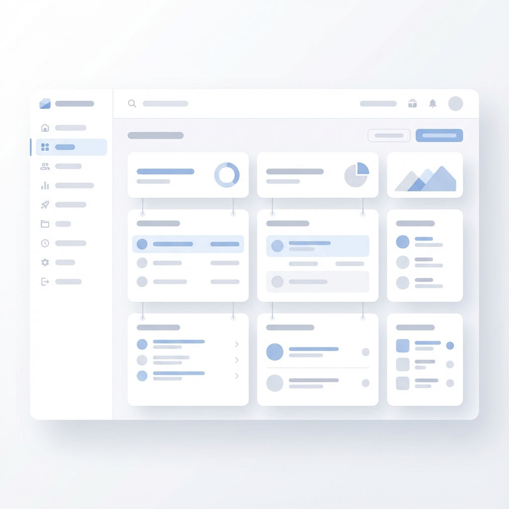
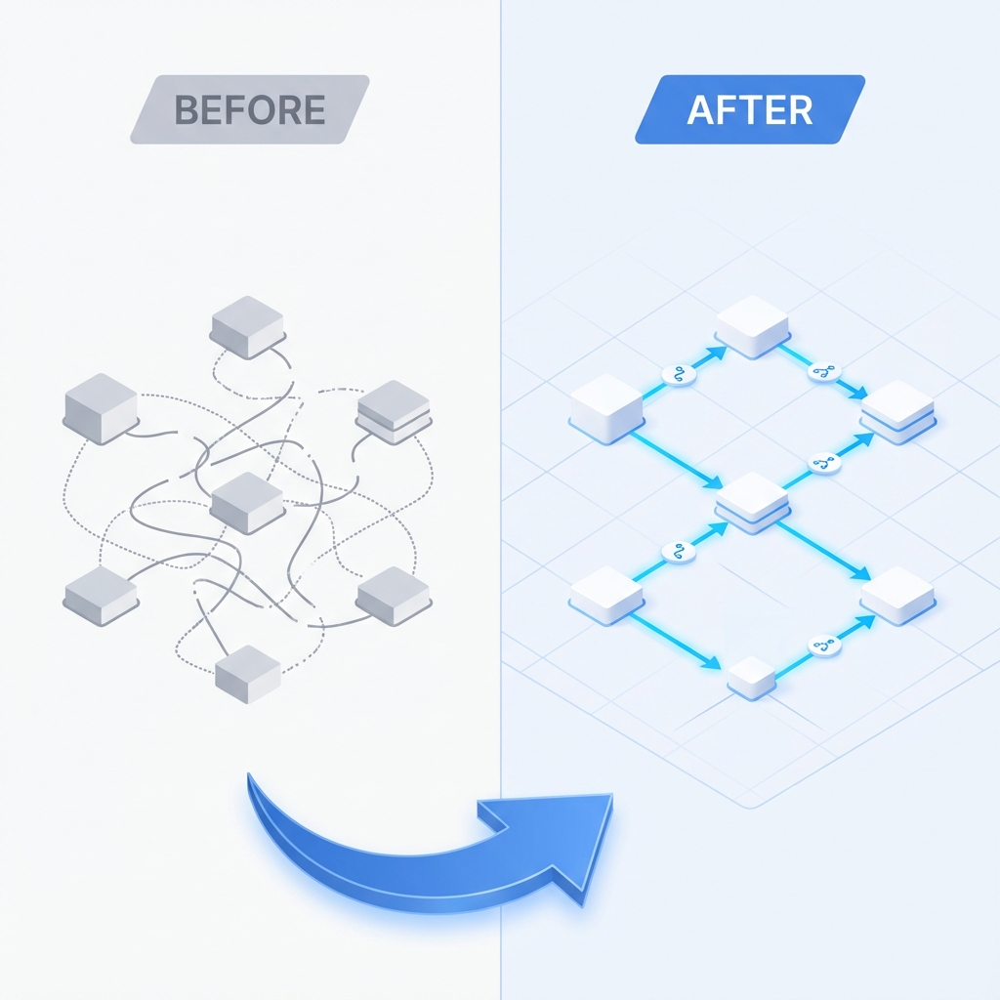

公式LINE×LPで、集客〜成約を仕組み化
最短10日〜で納品。
“売れる導線”を
一気に整える。
LINE & LP Studio
実績5件 |
満足度の高いサポート
ジャンル問わず対応。
LP制作→公式LINE構築→自動化までワンストップ。
公式LINE×LPとは？
集客〜成約を
“自動化”する
導線設計サービス

💡
LP制作から
公式LINE構築までを
ワンストップで完結。
オンライン完結！スピード納品で、
売上につながる導線を強化します。
導入の流れ
最短ルートで、
成果までつなぐ3ステップ
STEP 1
設計
ターゲットと訴求を整理し、
導線を最短設計
STEP 2
制作
LP制作＋
友だち追加導線を最適化
STEP 3
自動化
ステップ配信・タグ・
予約/申込まで自動化
選ばれる理由
“早いだけ”じゃない。
迷わない導線に整える
最短10日〜で、導線のムダを削って
“成約まで”一直線。
ヒアリングで要点を絞り、
必要なものだけをスピーディに形にします。
お客様の声
導入事例
対応が早くて助かった
やり取りがスムーズで、短期間でも納得の導線になりました。
迷いが消えて申込が増えた
LPとLINEがつながり、案内が自動化できてラクになりました。
数字で見る
「最短10日〜」で
導線を実装

時間をかけるより、まず整える。
改善も回しやすくなります。
料金プラン
選べる3つのプラン
Basic
50,000円
- LINE公式アカウント初期設定
- プロフィール/リッチメニュー/応答
- 既存素材活用（HP・画像）
- 納品後1ヶ月サポート
オススメ！
Standard
70,000円
- ベーシック全内容
- 素材ゼロ対応（文書・画像）
- 納品後1ヶ月サポート
Pro
80,000円
- スタンダード全内容
- 高機能LP制作込み（導線一式）
- 納品後1ヶ月サポート
Option
30,000円
LP制作（単体）
1分で入力完了！
まずは無料で
相談してみる
相談で分かること
- あなたに合う導線の組み方
- 最短納品までの流れと必要素材
- 費用感と、優先順位
※無理な勧誘は一切いたしません。